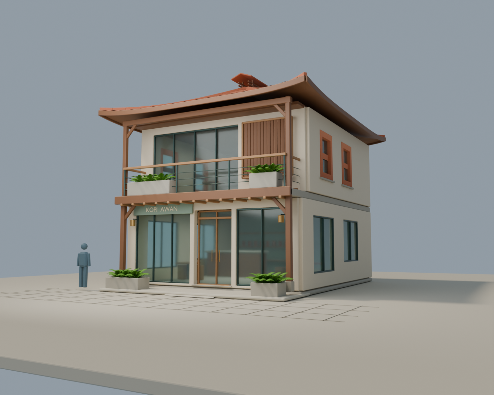
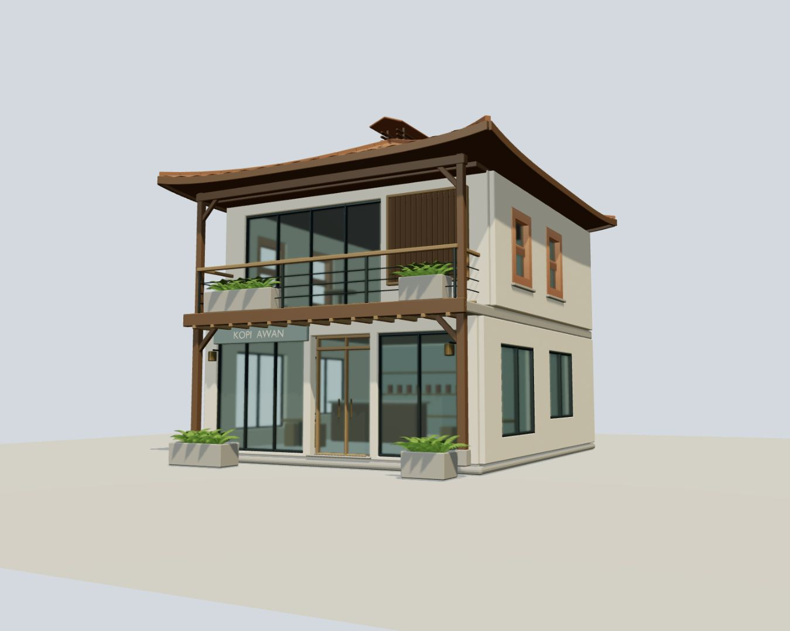
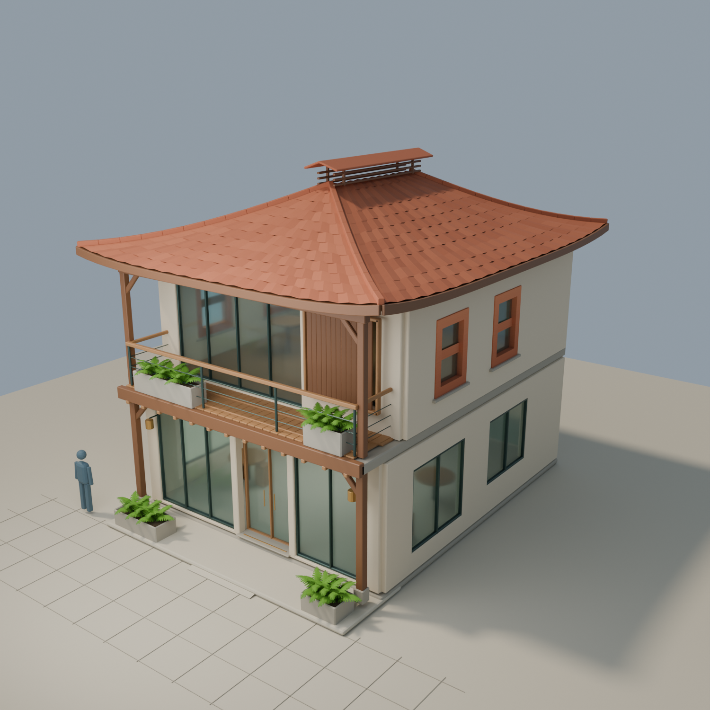
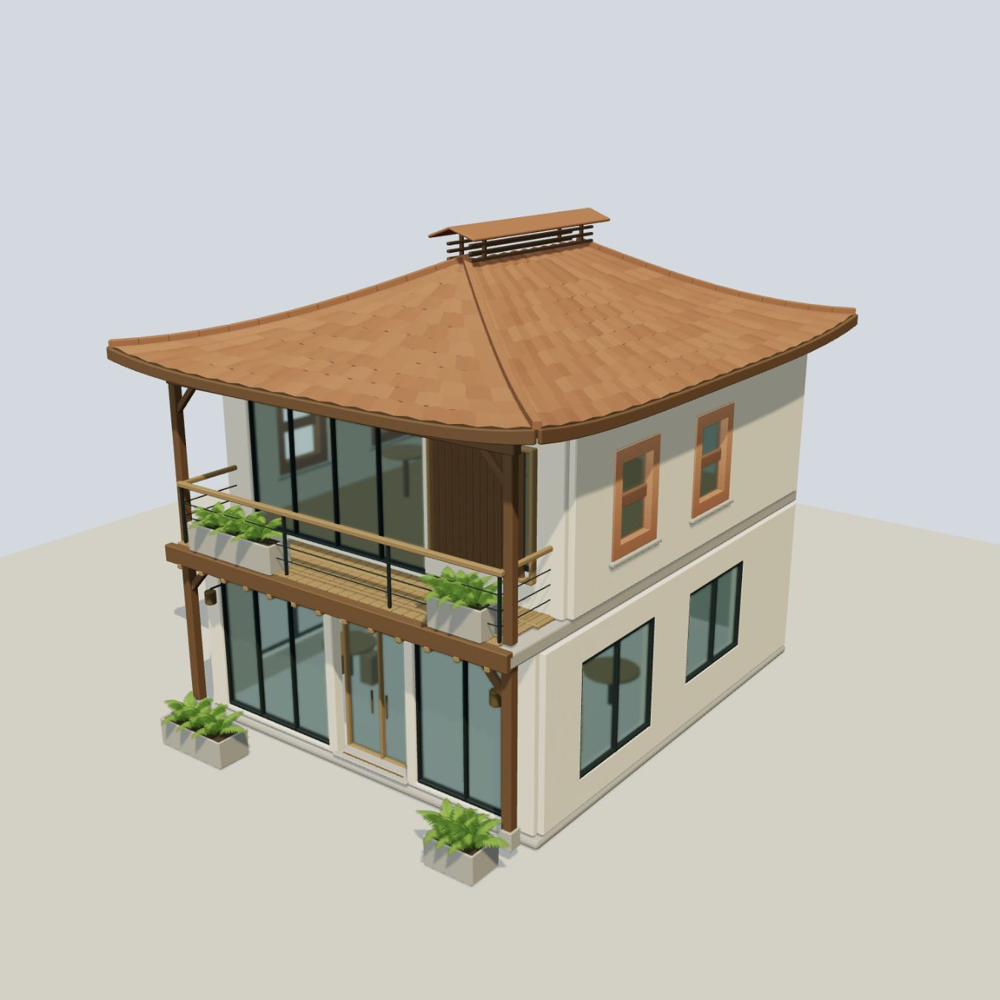
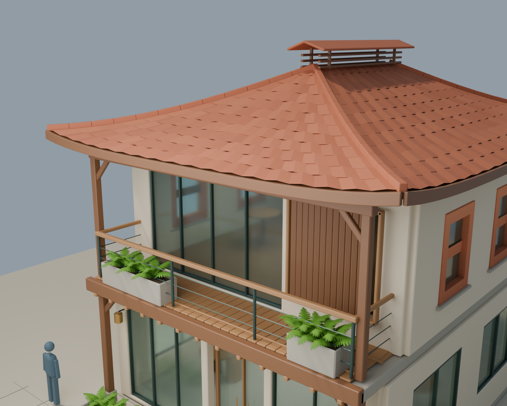
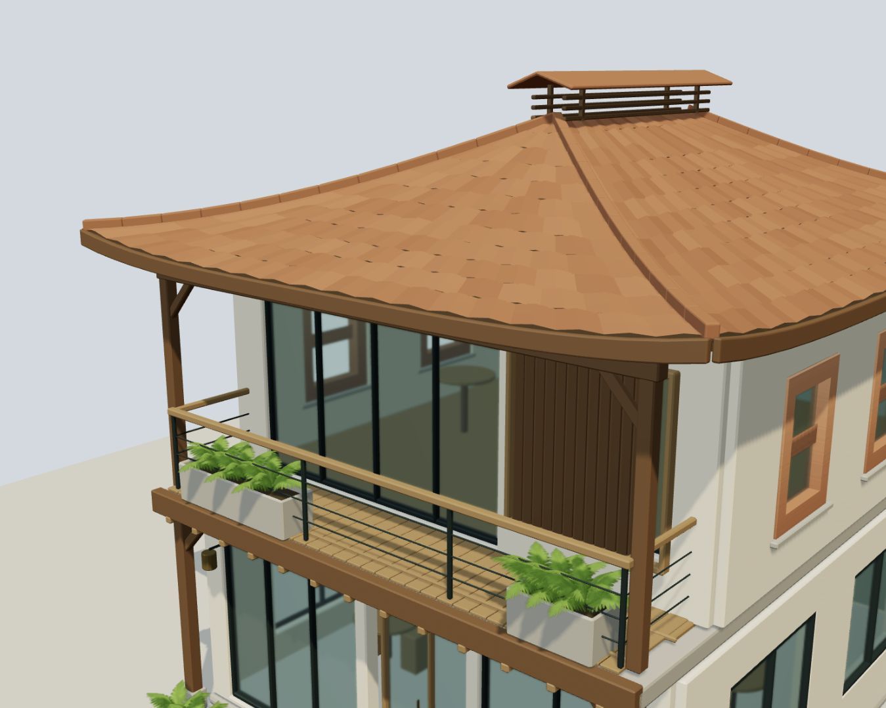
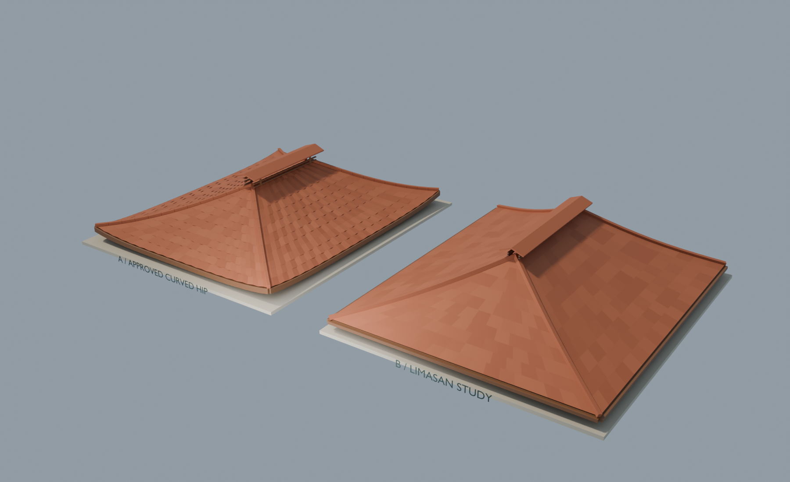

Same camera position, target and perspective. Renderer-specific daylight and glass remain visibly different. S2-A is approved; S2-B awaits review.
Costs, validation and limitations · Isolated live GLB preview







A remains the default. B is one interchangeable roof study, not another building.